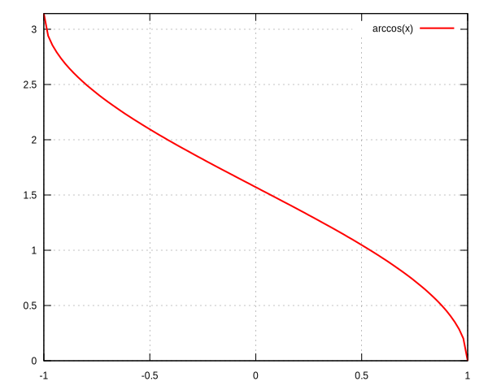
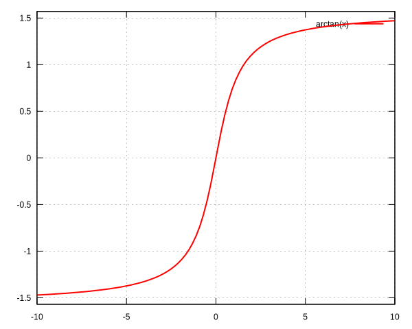

Functions
acos#
$\arccos$ function.
real theta = acos(x);
Parameter:
- x (real)
Output:
- theta (real)

acosh#
$\DeclareMathOperator\arccosh{arccosh}$ $\arccosh$ function.
real theta = acosh(x);
Parameter:
- x (real)
Output:
- theta (real)

adaptmesh#
Mesh adaptation function.
mesh Thnew = adaptamesh(Th, f, ...)
More complete example:
mesh Thnew = adaptmesh(Th, [fx, fy], hmin=1.e-3, hmax=1.e-2, iso=false)
Parameters:
- Th (mesh or mesh3)
Mesh to refine - f (func), scalar or vectorial
Function to follow for the mesh adaptation - hmin= minh (real)
Minimum edge size - hmax= maxh (real)
Maximum edge size - err= Err (real)
Error level (P1 interpolation) - errg= Errg (real)
Relative geometrical error - nbvx= Nbvx (int)
Maximum number of vertices - nbsmooth= NbSmooth (int)
Number of smoothing iterations - nbjacoby= NbJacoby (int)
Number of iterations for the smoothing procedure - ratio= Ratio (real)
Ratio of the triangles - omega= Omega (real)
Relaxation parameter for the smoothing procedure - iso= Iso (bool)
Isotropic adaptation (if true) - abserror= AbsError (bool)
Error (if true) - Relative error (if false) - cutoff= CutOff (real)
Lower limit of the relative error evaluation - verbosity= Verbosity (real)
Verbosity level - inquire= Inquire (bool)
If true, inquire graphically - splitpbedge= SplitPbEdge (bool)
If true, split all internal edges in half - maxsubdiv= MaxSubdiv (int)
Bound the maximum subdivisions - rescaling= Rescaling (bool)
Rescale the function in [0, 1] - keepbackvertices= KeepBackVertices (bool)
If true, try to keep vertices of the original mesh - isMetric= IsMetric (bool)
If ture, the metric is defined explicitly - power= Power (int)
Exponent of the Hessian - thetamax= ThetaMax (int)
Minium corner angle (in degree) - splitin2= SplitIn2 (bool)
Split all triangles into 4 sub-triangles if true - metric= Metric ([real[int], real[int], real[int]])
Array of 3 real arrays defining the metric - nomeshgeneration= NoMeshGeneration (bool)
If true, the mesh is not generated - periodic= Periodic
Build an adapted periodic mesh
Output:
- Thnew (mesh or mesh3)
adj#
Adjacent triangle of the triangle $k$ by the edge $e$
int T = Th[k].adj(e);
Parameter:
- e (int)
Edge number
Output:
- T (int)
Triangle number
AffineCG#
Affine conjugate gradient solver
Used to solve a problem like $Ax=b$
int Conv = AffineCG(A, x, precon=Precon, nbiter=NbIter, eps=Eps, veps=VEps, stop=Stop);
Parameter:
- A (matrix)
Matrix of the problem $Ax=b$ - x (real[int])
Solution vector - precon= Precon (real[int])
Preconditionning function - nbiter= NbIter (int)
Maximum number of iterations - eps= Eps (real)
Convergence criterion
If $\epsilon>0$: test $||A(x)||_p \leq \epsilon||A(x_0)||_p$
If $\epsilon<0$: test $||A(x)||_p^2 \leq |\epsilon|$ - veps= VEps (real)
Same as eps, but return -eps - stop= Stop (func)
Convergence criterion as a function
Prototype isfunc bool StopFunc (int Iter, real[int] U, real[int] g)
u: current solution,g: current gradient (not preconditionned)
Output:
- Conv (int)
0: converged - !0: not converged
AffineGMRES#
Affine GMRES solver
Parameters and output are the same as AffineCG
asin#
$\arcsin$ function.
real theta = asin(x);
Parameter:
- x (real)
Output:
- theta (real)

asinh#
$\DeclareMathOperator\arcsinh{arcsinh}$ $\arcsinh$ function.
real theta = asinh(x);
Parameter:
- x (real)
Output:
- theta (real)

assert#
Verify a condition is true (same as C), if not the program stops.
assert(x==0)
Parameter:
- Bollean condition
Output:
- None
atan#
$\arctan$ function.
real theta = atan(x);
Parameter:
- x (real)
Output:
- theta (real)

atan2#
$\displaystyle{\arctan\left(\frac{y}{x}\right)}$ function, returning the correct sign for $\theta$.
real theta = atan2(y, x)
Parameter:
- x (real)
Output:
- theta (real)
atanh#
$\DeclareMathOperator\arctanh{arctanh}$ $\arctanh$ function.
real theta = atanh(x);
Parameter:
- x (real)
Output:
- theta (real)

BFGS#
TODO
Parameter:
Output:
buildlayers#
TODO
Parameter:
Output:
buildmesh#
Build a 2D mesh using border elements.
mesh Th = buildmesh(b1(nn) + b2(nn) + b3(nn) + b4(nn), [nbvx=Nbvx], [fixeborder=FixeBorder]);
Parameters:
- b1, b2, b3, b4 (border)
Geometry border,b1(nn)meanb1border discretize bynnvertices - nbvx= Nbvx (int) [Optional]
Maximum number of vertices
Default: >TODO - fixeborder= FixeBorder (bool) [Optional]
If true, mesh genertator can not change the boundary mesh
Default:false
Output:
- Th (mesh)
Resulting mesh
ceil#
Round fractions up of $x$.
int c = ceil(x);
Parameter:
- x (real)
Output:
- c (int)
change#
Change a property of a mesh.
int[int] L = [0, 1];
Thnew = change(Th, label=L);
Parameter:
-
Th (mesh)
Original mesh -
label= L (int[int])
Pair of old and new label - region= R (int[int])
Pair of old and new region - flabel= l (func int)
Function of int given the new label - fregion= r (func int) Function of int given the new region
Output:
- Thnew (mesh) Mesh with chenged parameters
checkmovemesh#
Check a movemesh without mesh generation.
TODO
Parameter:
Output:
clock#
Get the clock in second.
real t = clock();
Parameter:
- None
Output:
- t (real)
Current CPU time
cmaes#
TODO
Parameter:
Output:
conj#
Caculate the conjuguate of a complex number.
complex C1 = 1 + 1i;
complex C2 = conj(C1);
Parameter:
- C1 (complex)
Complex number
Output:
- C2 (complex)
Conjuguate of C1
convect#
Characteristic Galerkin method.
convect([ux, uy], dt, c);
TODO
Parameter:
Output:
cos#
$\cos$ function.
real x = cos(theta);
Parameters:
- theta (real)
Output:
- x (real)

cosh#
$\cosh$ function.
real x = cosh(theta);
Parameters:
- theta (real)
Output:
- x (real)
cube#
Construct a cubic mesh.
Need:
include "cube.idp"
mesh3 Th = cube(nnX, nnY, nnZ, [X(x), Y(y), Z(z)], [label=Label], [flags=Flags], [region=Region]);
Parameters:
- nnX (int)
Number of discretization point along $x$ - nnY (int)
Number of discretization point along $y$ - nnZ (int)
Number of discretization point along $z$ - X(x) (func) [Optional]
Affine function of $x$ to define the length
Default:x - Y(y) (func) [Optional]
Affine function of $y$ to define the width
Default:y - Z(z) (func) [Optional]
Affine function of $z$ to define the height
Default:z - label= Label (int[int]) [Optional]
List of surface labels
Default:[1, 2, 3, 4, 5, 6] - flags= Flags (int) [Optional]
Refer to square - region= Region (int) [Optional]
Region number of the cube volume Default:0
Output:
- Th (mesh3)
Cube mesh
dfft#
TODO
diffnp#
Arithmetic useful function.
diffnp(a, b) = (a<0)&(0<b) ? (b-a) : 0;
diffpos#
Arithmetic useful function.
diffpos(a, b) = max(b-a, 0);
dist#
Arithmetic useful function.
dist(a, b, c) = sqrt(a^2 + b^2 + c^2);
EigenValue#
TODO
emptymesh#
Build an empty mesh.
Useful to handle Lagrange multipliers in mixed and Mortar methods.
mesh eTh = emptymesh(Th, ssd);
Parameters:
- Th (mesh
Mesh to empty - ssd (int[int])
>TODO
Output:
- eTh (mesh)
Empty mesh
erf#
The error function:
real err = erf(x);
Parameters:
- x (real)
Output:
- err (real)
erfc#
Complementary of the error function:
real errc = erfc(x);
Parameters:
- x (real)
Output:
- err (real)
exec#
Execute an external command.
int v = exec(command);
Parameters:
- command (string)
Command to execute
Output:
- v (int)
Value returned by the command
exit#
Exit function, equivalent to return.
exit(N);
Parameters:
- N (int)
Return value
Output:
- None
exp#
Exponential function.
real a = exp(b);
Parameters:
- b (real)
Output:
- a (real)
fdim#
Positive difference (cmath function).
real fd = fdim(a, b);
Parameters:
- a (real)
- b (real)
Output:
- fd (real)
If $x > y$, return $x-y$
If $x \leq y$, return $0$
floor#
Floor function.
real a = floor(b);
Return the largest integer value not greater than b.
Parameters:
- b (real)
Output:
- a (real)
fmax#
Maximum (cmath function).
real Max = fmax(a, b);
Parameters:
- a (real)
- b (real)
Output:
- Max (real)
fmin#
Minimum (cmath function).
real Min = fmin(a, b);
Parameters:
- a (real)
- b (real)
Output:
- Min (real)
fmod#
Remainder of $a/b$ (cmath function).
real Mod = fmin(a, b);
Parameters:
- a (real)
- b (real)
Output:
- Min (real)
Parameters:
- a (real)
- b (real)
Output:
- Mod (real)
imag#
Imaginary part of a complex number.
complex c = 1. + 1i;
real Im = imag(c);
int1d#
1D integral.
int1d(Th, [Label], [qfe=Qfe], [qforder=Qforder])(
...
)
Used in problem, solve or varf definition to impose a boundary condition only (FreeFem++ does not support 1D simulation).
Parameters:
- Th (mesh)
Mesh where the integral is calculated - Gamma (int) [Optional]
Label of the 1D border
Default: all borders of the mesh - qfe= Qfe (keyword) _[Optional]
Quadrature formula, see quadrature formulae - qforder= Qforder (keyword) [Optional]
Quadrature order, see quadrature formulae
Output:
- Non relevant
The content of int1d must be a linear or bilinear form.
int2d#
2D integral.
int2d(Th, [Region], [qfe=Qfe], [qforder=Qforder])(
...
)
Or
int2d(Th, [Label], [qfe=Qfe], [qforder=Qforder])(
...
)
Used in problem, solve or varf definition to: - Calculate integral in 2D simulation - Impose a boundary condition in 3D simulation
Parameters:
- Th (mesh)
Mesh where the integral is calculated - Region (int) [Optional]
Label of the 2D region (2D simulation)
Default: all regions of the mesh - Gamma (int) [Optional]
Label of the 2D border (3D simulation)
Default: all borders of the mesh - qfe= Qfe (keyword) _[Optional]
Quadrature formula, see quadrature formulae - qforder= Qforder (keyword) [Optional]
Quadrature order, see quadrature formulae
Output:
- Non relevant
The content of the int2d must be a linear or bilinear form.
int3d#
3D integral.
int3d(Th, [Region], [qfe=Qfe], [qforder=Qforder])(
...
)
Used in problem, solve or varf definition to calculate integral in 3D simulation.
Parameters:
- Th (mesh)
Mesh where the integral is calculated - Region (int) [Optional]
Label of the 3D region
Default: all regions of the mesh - qfe= Qfe (keyword) _[Optional]
Quadrature formula, see quadrature formulae - qforder= Qforder (keyword) [Optional]
Quadrature order, see quadrature formulae
Output:
- Non relevant
The content of the int3d must be a linear or bilinear form.
intalledges#
TODO
interpolate#
Interpolation matrix.
matrix I = interpolate(Vh, Wh, inside=Inside, t=T, op=Op, U2Vc=U2VC);
TODO
invdiffnp#
Arithmetic useful function.
invdiffnp(a, b) = (a<0)&(0<b) ? 1/(b-a) : 0
invdiffpos#
Arithmetic useful function.
invdiffpos(a, b) = (a<b) ? 1./(b-a) : 0
isoline#
Need:
load "isoline"
int N = isoline(Th, u, xy, iso=Iso, close=Close, smoothing=Smoothing, ratio=Ratio, eps=Eps, beginend=BeginEnd, file=File);
TODO
j0#
TODO
j1#
TODO
jn#
TODO
jump#
TODO
LinearCG#
TODO
LinearGMRES#
TODO
log#
TODO
log10#
TODO
max#
TODO
mean#
TODO
medit#
TODO
min#
TODO
movemesh#
TODO
movemesh23#
TODO
NLCG#
TODO
on#
TODO
plot#
TODO
polar#
TODO
pow#
Power function.
real p = pow(a, b);
$p=a^b$
Parameters:
- a (real)
- b (real)
Output:
- p (real)
projection#
Arithmetic useful function.
projection(a, b, x) = min(max(a, x), b);
readmesh#
TODO
readmesh3#
TODO
round#
TODO
savemesh#
TODO
savesol#
TODO
set#
TODO
sin#
TODO
sinh#
TODO
sort#
TODO
splitmesh#
TODO
square#
TODO
tan#
TODO
tanh#
TODO
tetg#
TODO
tetgconvexhull#
TODO
tetgreconstruction#
TODO
tetgtransfo#
TODO
trunc#
TODO
y0#
TODO
y1#
TODO
yn#
TODO